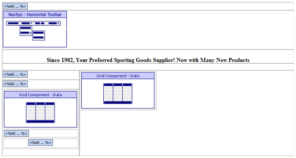
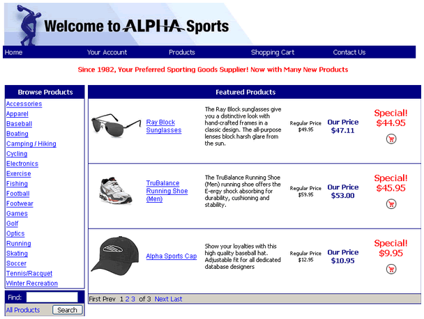

SPECIALS.A5W
Purpose
A customer displays the SPECIALS.A5W page to view all products on sale.
Description
The SPECIALS.A5W page is the same page as INDEX.A5W but with a different filter for the GRD_SPEC component. The SPECIALS.A5W page includes the SHOPCART.JS custom JavaScript file to show a popup for the shopping cart.
SPECIALS.A5W contains the NAV_MAIN navigation, GRD_PRODNAV grid, and GRD_SPEC grid components.
Links
The Show All Specials link on the INDEX.A5W page displays the SPECIALS.A5W page.

SPECIALS.A5W in the WYSIWYG tab of the HTML Editor

SPECIALS.A5W in the Browser
Edits to the Page Source
When you look at INDEX.A5W with the Source tab of the HTML Editor, you will see a large amount of HTML and Xbasic code. The HTML Editor placed almost all of it there automatically, as we used the WYSIWYG tab to place the tables, text, graphics, and components on the page. There are a few interesting exceptions, where we changed the page code through the Source tab.
The a5w_include("loggedinvalues.a5w") statement runs the code on the LOGGEDINVALUES.A5W page. This page creates and sets the values of session.protectedpUser.userid, session.protectedpUser.type, and session.protectedpUser.name.
|
a5w_include("loggedinvalues.a5w") |
Next, the code defines the welcome message for the current user. If no name was found for the current user, welcome is set to NULL. If a user name was found, the welcome message includes the session.protectedpUser.name.
|
if session.protectedpUser.name = "" welcome = "" ' welcome message for current user shown below product navigation list else welcome = "Welcome "+session.protectedpUser.name+"!" end if |
The location = "" statement clears the menu of any highlighted entries.
|
with tmpl_NAV_MAIN location = "" componentName = "NAV_MAIN" end with |
Then, the page script saves the dialog's style, to use it later.
|
pgstyle = tmpl_GRD_PRODNAV.style_name |
The override section of the GRD_SPEC component sets the filter to select only special (sale) items.
|
with tmpl_GRD_SPEC DBF.filter = "cdate(sale_until) =\"\" .or. sale_until >= date()" ' filter to override component filter to show all specials componentName = "GRD_SPEC" end with |
The following code defines default values for the three variables needed by the search form.
|
comp_name = "GRD_PRODS" 'the component to search fld_name = "description" 'a field defined in the 'search' in 'GRD_PRODS' pg_name = "productlist.a5w" 'a page to open that has the GRD_PRODS component |
The page script then adds the search form. See Creating the Abstracted Search Code.
This code saves the style to use for the search code. showall contains the text for the link to show all products.
|
style = "shopcart" showall = "All Products" |
The script uses pgstyle to give the page title the same style as the grid component.
|
<tr> <td colspan="2" align="middle" class=" <%a5 ? pgstyle %> ErrorDataTD"><br><strong>Since 1982, Your Preferred Sporting Goods Supplier! Now with Many New Products</strong> </td> </tr> |
The search form is displayed.
|
<tr> <td> <%a5 ? search_HTML %> </td> </tr> |
Here, the page code uses pgstyle to give the welcome message the same style as the grid component.
|
<%a5 if welcome <> "" %> <tr> <td class=" <%a5 ? pgstyle %> ErrorDataTD" align="middle"><strong> <%a5 ? welcome %> </strong> </td> </tr> <%a5 end if %> |
Page Security Information
Always Allowed
See Also